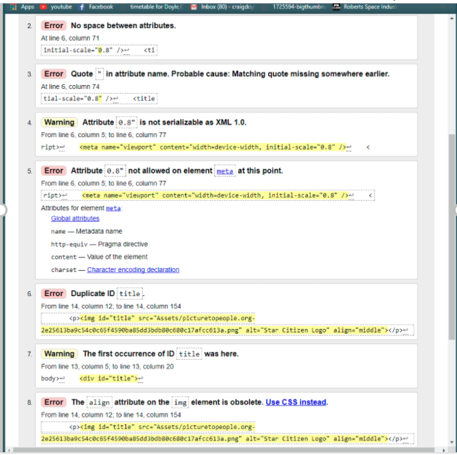
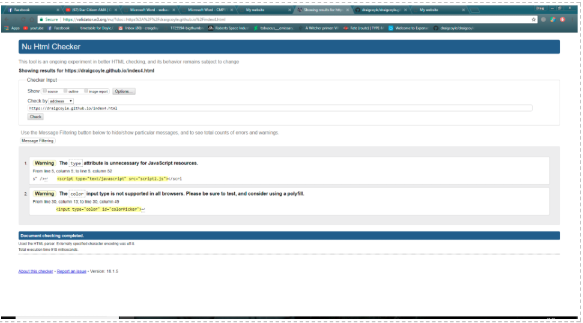
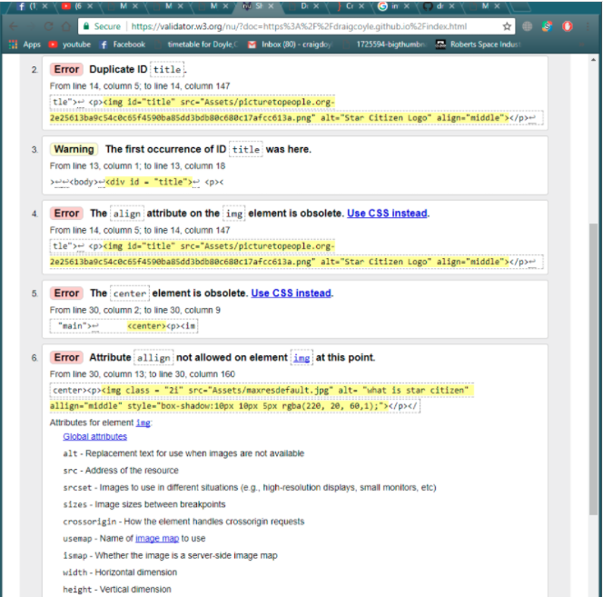
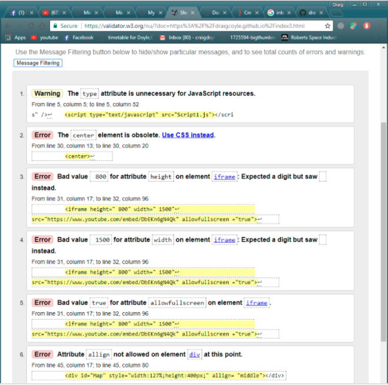
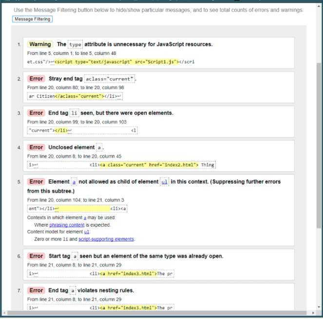
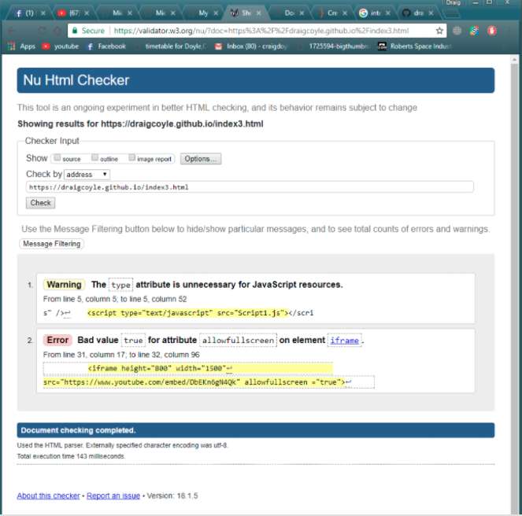
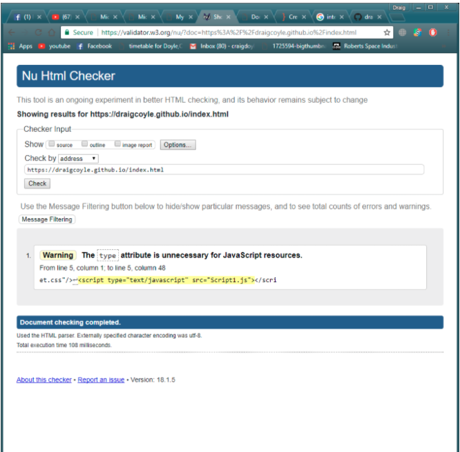
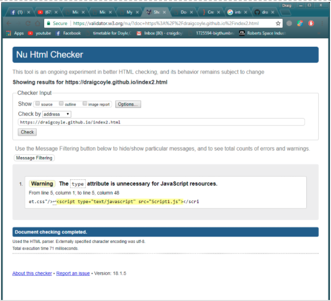
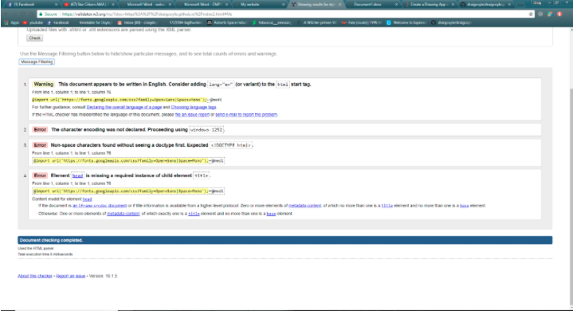
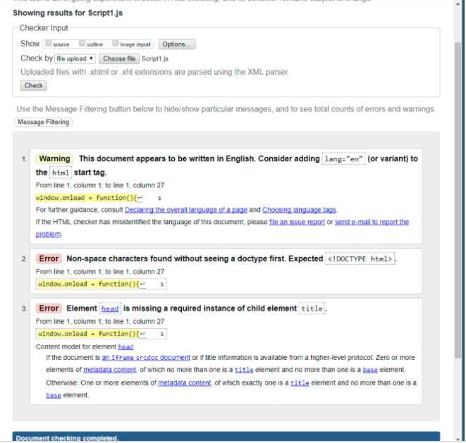

I started off the making of my website with standard html code of making a navigation bar and title as I knew that this code would become the standard starting point of each html page that I write. I improved the design of this website with the CSS I learned from the YouTube channel Jake wright. I implemented this with standard CSS code, varying from margin percentage to simple color changes in the navigation bar. However it wasn't only CSS that that improved the look and feel of my navigation bar, I also used the class 'current' which makes the page that the user is currently on show as bold on the navigation bar. After that I used what I learned from the lectures to implement images and text into my home page and then moved on to my second page where I started to incorporate some java script. On my second webpage I started to use java script to allow the user to go through star citizens various professions. I did this by creating 2 arrays, one for the images and one for the text to go with the image. I then had a counter to go through each image and text whenever the user presses the arrow in the bottom right hand corner. The counter loops round the arrays and the code to display the right one. I made a class named 'professionimg' the images so the design process was much easier. I learnt this from weeks 4 and 5 of the workshops that were provided. After that I started working on my 3rd webpage, on this webpage I utilized basic html to implement a video into my 3rd webpage. The video is imbedded onto YouTube. I used I frame to implement the video but I didn't feel that I needed to use much CSS to implement the video in properly. However I did implement some html to allow the user to watch the video in full screen. I also used java script to put in the geo location of foundry 42. The standard code is normal however I had to tamper with the longitude and latitude to pinpoint foundry 42. I also had to change the zoom in the java script the user could clearly see foundry 42. The source I used for this was w3c schools. On my last web page I used java script to make the canvas that allows the user to create their own logo for their star citizen organization. This page uses the most amount of java script out of all the pages. I used java script mixed with html in order to set up the buttons with loading and saving any drawing the user creates. I used event listeners to set up my canvas and functions which allowed me to implement code such as draw, save and load. I picked up these techniques through the week 9 lecture and a website by William Malone.My strengths throughout the making the of this website was the overall CSS I feel like I improved the design of the website quick and easily running into very few errors whilst overall had a strong understanding of the code in general. Also the basic java script I used for index 2 webpage didn't take me too long to complete. Lastly I feel like my overall design of the website being minimalistic and easy to use has gone well. My weakness's when making the website was the java script I used when making the canvas. I ran into many errors when making the canvas and overall didn't have a great understanding of the java script as I was making it. My improvements would definitely be improving on my knowledge on more difficult uses of java script to allow more interactivity in my websites.
Here are all the errors that came up when I checked for index 4. all of these errors are standard syntax errors or some code that was obsolete.
Here is the validation checker after I got rid of all the errors
I ended up with 4 total errors on my home page these were solved by deleting some obsolete code.
On the 3rd webpage I only had 5 errors all of the errors I resolved by getting rid of some spaces I had when defining the height and width of the I frame.
On my last web page I had 6 errors all of these errors were basic syntax errors where I had to change the position of a speech mark. I also had to delete some parts as they were obsolete and add an 'alt' to the images used.
On index 3 I couldn't fix the error where w3c validator told me that 'true' was a bad attribute on my line of code for the video which allows the user to enter full screen. I could find no other values to set where the user could still use full screen and the code works perfectly fine with value 'true' set for allow full screen. Here are the rest of my screen shots showing the w3c validator has displayed zero errors on my other web pages.
 After this I checked for errors in my CSS and java script
In the validation of my CSS the w3c validator showed 3 errors. The 2nd one tells me to add into a CSS file and the 3rd error tells me that there is an error to do with the element 'head' however there is no element 'head' in my CSS. However all other errors to do with syntax and organization has been resolved and my CSS works entirely as intended.
The same type of errors show up when testing my java script with there being no element head and no way of me being able to change !DOCTYPE html . However just like my CSS the code works completely as intended. References : https://www.w3schools.com/tags/tag_iframe.asp http://www.williammalone.com/articles/create-html5-canvas-javascript-drawing-app/ https://www.w3schools.com/html/html5_geolocation.asp Website which had all my Star Citizen images. https://robertsspaceindustries.com/